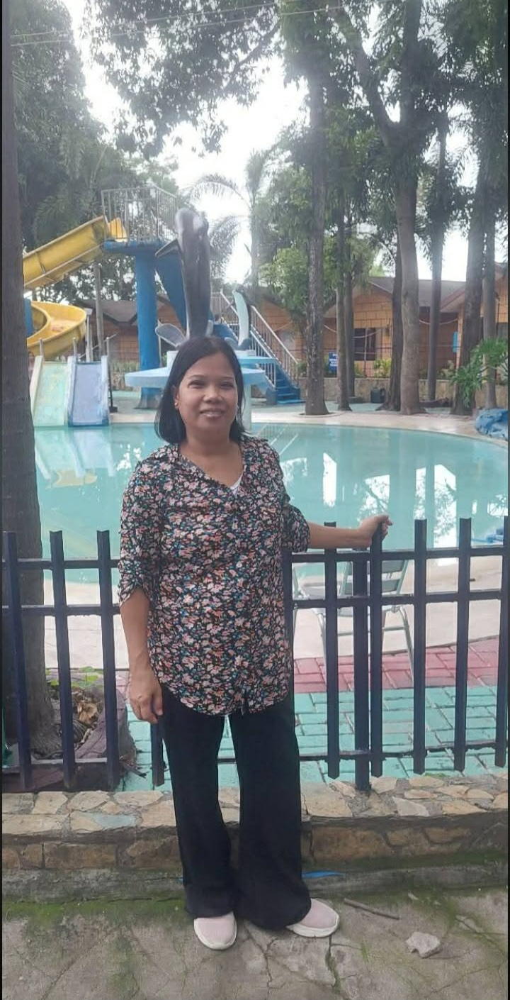
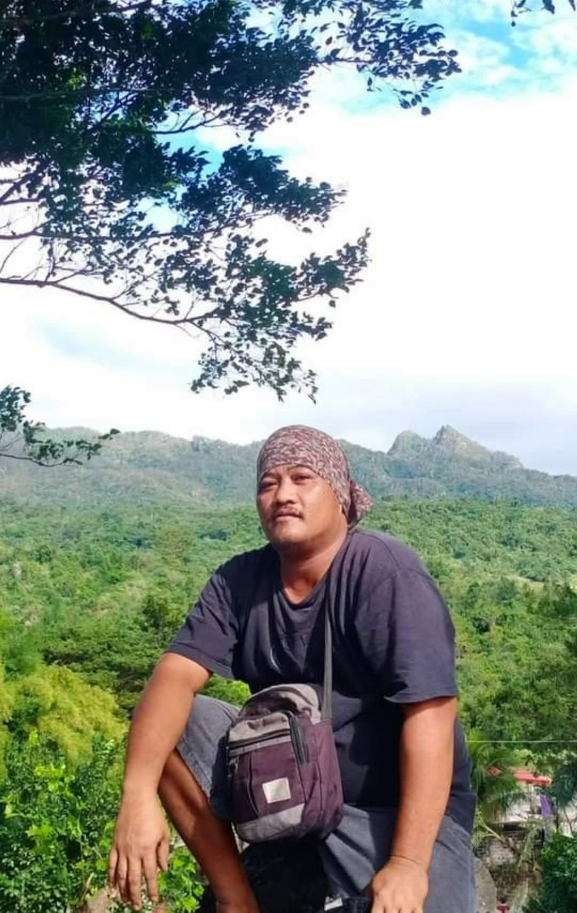

The people who make every season brighter
My Family

Reynaldino S. Bindoy (Me)
This is me! I am Reynaldino S. Bindoy. I grew up here in Manila. I was born on July 13, 2009 and was raised with great care by my parents.
I am a proud Filipino, born and raised in the Philippines.
Ever since I was a kid, I have always been interested in playing games—some for their story, some for their mystery, or just to have fun with friends.
In the future, I hope to have a successful career in the I.T. industry, earn enough money to support my family, and repay them for allowing me to attend school and receive an education.

Rendale Kevin S. Bindoy
This is my little brother, Rendale Kevin S. Bindoy. I call him "K" for short. He was also raised here in Manila and was born on July 29, 2011.
He also likes to play games, specifically tactical shooter war games, where two sides of the battlefield fight to secure and conquer land.
He is interested in business and hopes someday to establish a coffee shop or a company like Starbucks.
After all, my father, my brother, and I like drinking coffee. As for his hobbies, he likes playing the guitar and boxing with his friends.

Mary Ann S. Bindoy
The precious jewel of our family, my mother, Mary Ann S. Bindoy, was born in the province of Bulacan on May 17, 1976. She is a caring mother who loves her children very much.
She taught us about the world and how to take responsibility for our own actions, be kind to others, and build healthy relationships.
My mom is the type of person who likes to go swimming. Whether she is at the beach, in a river, or in a swimming pool, she can keep going for hours on end. She also likes watching K-dramas, often watching multiple series as a pastime while she is doing housework. She is a mother that I am proud to have.

Reynaldo S. Bindoy
This is my father; if I can describe him with one word, it would be hardworking. His name is Reynaldo S. Bindoy, born on January 30, 1984, in Manila, Philippines.
He is the guardian of our family who kept us safe. Although not perfect, he is the best father I could ever have. He supports me in pursuing my dreams and allowed me to go to school. I am his son, and I am thankful to God for that.
Like me, he also likes spicy foods and street foods. He likes watching action movies featuring martial arts, Bruce Lee, and Jackie Chan, as well as old classic Filipino movies led by the legendary duo and enemies Fernando Poe Jr. and Paquito Diaz.